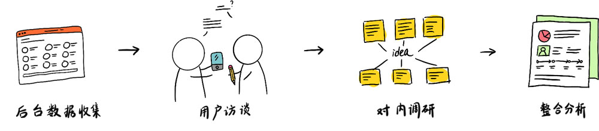

项目发言
公司需要给工程师做一个无纸化办公的应用，能帮助他们做一些不同业务的工作。
2017年10月接手这个项目，现在手上几个项目稳定下来，于是想做下用户体验优化。
刚好手边在看《破茧成蝶——用户体验设计师的成长之路》，里面非常详细的解释了设计流程，我说服了团队成员理解这套工具并一同参与到前期的设计工作。

一款帮助工程师更高效地维修产品，并获得收益的应用。
公司需要给工程师做一个无纸化办公的应用，能帮助他们做一些不同业务的工作。
2017年10月接手这个项目，现在手上几个项目稳定下来，于是想做下用户体验优化。
刚好手边在看《破茧成蝶——用户体验设计师的成长之路》，里面非常详细的解释了设计流程，我说服了团队成员理解这套工具并一同参与到前期的设计工作。
2017年12月份，公司90%的运营反馈新业务上线后，客户反馈投诉电话增加了60%，反馈内容：客户频繁反馈需要等很长时间才有工程师联系，或是到了预约时间点，工程师没来。工程师没有及时联系客户，因此平台加大了对工程师的管控，结果得到了他们的抗议，最终并没有解决掉问题。
产品的目标就是让工程师更好地服务于客户，但是现在却没有做到，这到底是什么问题呢？
于是，我们展开了用户调研工作，对外通过查阅用户后台数据来收集2000名用户的信息数据，再通过面对面访谈以及电话访谈进一步确认用户日常工作流程以及对产品的期望和痛点，对内举办小型头脑风暴收集团队内对新版本的想法。
根据本阶段对用户日常工作的研究，基于使用场景我将用户分为两类persona，关注工作效率和关注工作收益。
重设计前我整理出一份完整的用户使用流程地图。一共需要经过 9个节点，15个页面。我将流程分为接单、服务、提现三大块。下面我将每个部分获得的用户真实行为流程地图绘制出来，并提出可实行的改进点和方向，为接下来的重设计做好理论基础。
设计机会点挖掘：80%的用户反馈会被打断当前操作。正在操作服务单的工程师需要专注于当前操作中的服务单，因为对于他来说再次找到这一服务单很困难。
痛点：搜索服务单的逻辑需要优化；接单逻辑不应该不打扰工程师操作。
1. 给客户打电话这一环节在应用中是必须考察的，但是实地采访中发现，75%的工程师是通过座机完成这一环节，然后再通过应用给客户通话。
2. 工程师上门前会打电话确认，可能会再次修改预约时间，但调研中发现修改原因不仅仅只有这一种，一共有2-3种。
3. 工程师上门前需要在应用中确认到达才可进入下一步，然而80%的用户会忘记这一步直接开始维修。
4. 工程师上门维修时间是很紧凑的，他们通常是线下记录验证码、拍摄照片再进应用中把内容填进去。
设计机会点挖掘：从流程上来看，简化页面流程并整合内容信息就可以解决用户的痛点。
保留了用户最喜爱的日程工具和不同任务的服务单入口，让用户能快速找到今日的待服务订单，加入了服务单和收入的汇总，满足收益导向人群的核心需求。
这是在用户测试环节中，得到最多肯定的设计。因为遵循了用户的需求，避免打扰到用户现在的操作。
我将这个设计方案制作成高保真交互原型进行用户测试，并给他们布置一些任务：
经过几轮用户测试，再次调整设计，产出高保真设计图。
经过重新设计后，界面数量减少了40%，
工作节点减少了 30% ，
90% 的用户操作每个任务的用时比之前缩短至先前的一半。